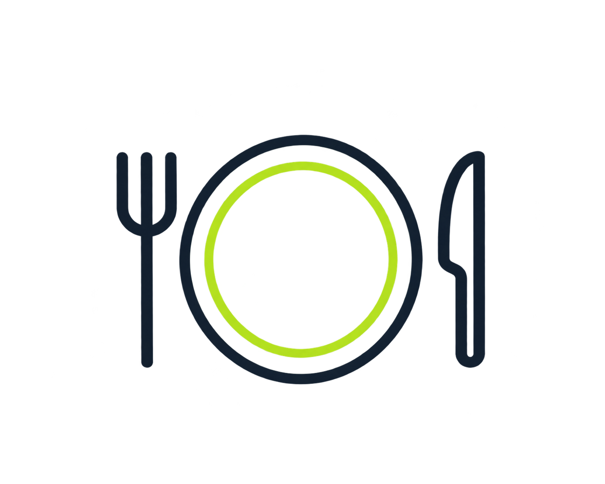
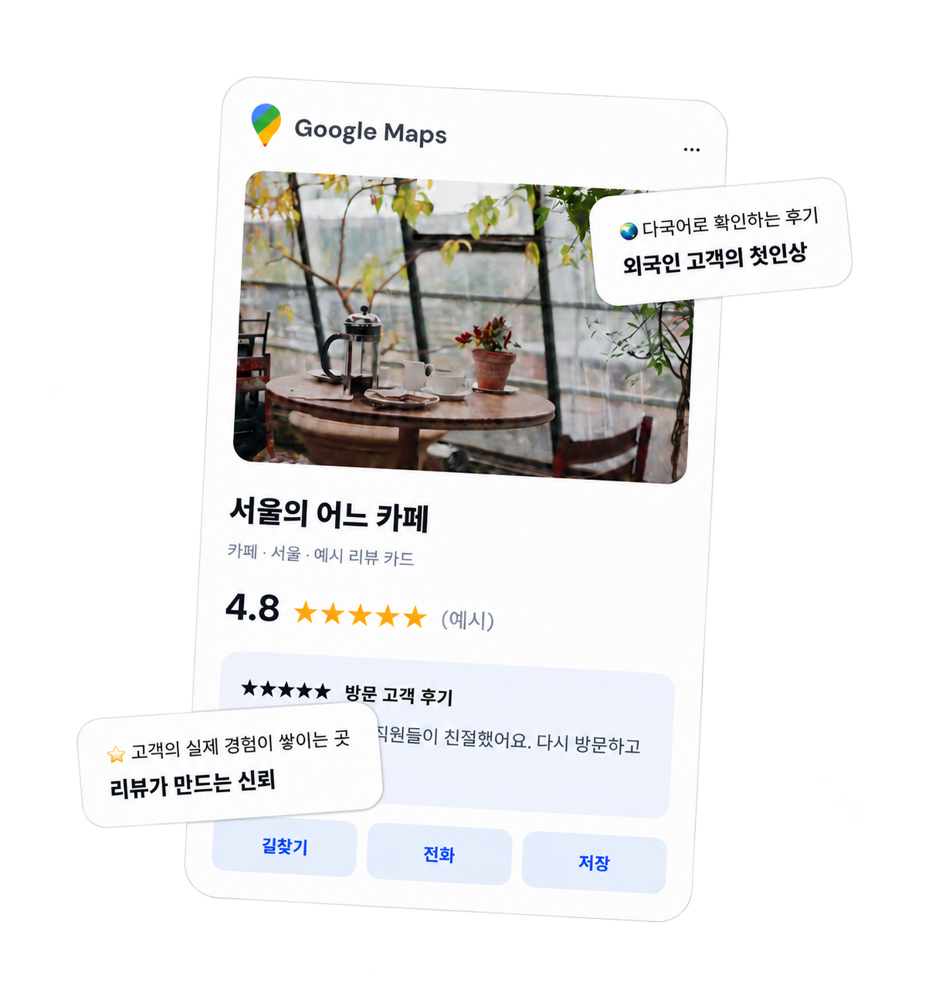
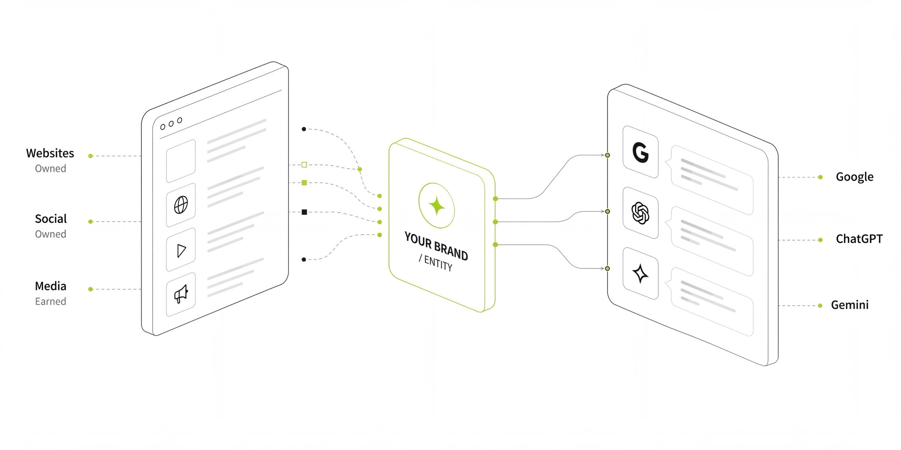

맛집 · 음식점
어떤 메뉴가 있는지, 다녀온 고객은 어땠는지.
GOOGLE REVIEW MARKETING
처음 방문하는 고객도 우리 매장을 이해하고 선택할 수 있도록.
구글 지도 정보부터 사진, 실제 고객 리뷰와 답변까지 관리합니다.
어떤 사진이 보이는지, 최근 후기는 어떤지,
필요한 정보가 있는지.
구글 지도에 보이는 모습이 우리 매장의 첫인상이 됩니다.

정확한 정보와 생생한 사진, 실제 고객의 후기와 답변.
고객이 방문을 결정할 때 살펴보는 정보를 관리합니다.
방문에 필요한 정보를
정확하게.
실제 고객의 경험이
후기로 이어지도록.
고객의 목소리에
꾸준히 응답하도록.
달라진 정보를
놓치지 않도록.

어떤 메뉴가 있는지, 다녀온 고객은 어땠는지.
어떤 분위기인지, 머물고 싶은 공간인지.
어디에 있는지, 방문 전 무엇을 알아야 하는지.
SEO & GEO
고객이 어디서 검색하든, 우리 브랜드를 발견할 수 있도록.구글 지도의 매장 정보와 리뷰부터 웹사이트의 콘텐츠까지,유조유는 구글 리뷰 마케팅과 SEO·GEO를 함께 설계합니다.
SEO
구글 · 네이버 등
검색 결과 상단 노출
GEO
챗GPT · 제미나이 등
AI 답변 내 브랜드 언급
01
→ 검색 노출 구조 개선
02
→ GEO / AI Citation 구조 개선
03
→ 콘텐츠 구조 및 키워드 전략
04
→ SEO·GEO 진단 및 로드맵
검색 패러다임이 Google·Naver 중심에서 ChatGPT·Gemini·Perplexity 등
AI 생성형 답변으로 급격히 전환되고 있습니다.
robots.txt, llms.txt, 구조화 데이터, 사이트맵 등 AI와 검색엔진이 브랜드 정보를 제대로 수집할 수 있는지 확인합니다.
브랜드명, 서비스, 전문 분야, 외부 언급 등의 연결 관계를 분석해 브랜드 Entity가 명확하게 형성되어 있는지 확인합니다.
ChatGPT·Gemini·Perplexity 등 주요 AI 검색 환경에서 브랜드 언급·인용·경쟁사 노출 현황을 직접 확인합니다.
좋은 브랜드라도 검색엔진과 AI가 이해하지 못하면
추천 후보에 포함되기 어렵습니다.
SERVICES
구글 리뷰부터 검색·AI, 글로벌 SNS까지. 브랜드에 필요한 서비스를 함께 설계합니다.
매장의 첫인상을 만드는 리뷰 마케팅
사이트 검색 노출 구조 진단
→ Technical Audit / Index Report
검색 수요 기반 전략 설계
→ Keyword Map / Content Plan
생성형 AI 검색 환경 최적화
→ AI Visibility / Citation Analysis
검색·AI 친화 콘텐츠 구축
→ Landing / FAQ / Article
국가별 공식 SNS 채널 구축·운영
→ Multi-Channel / Localization / Operation
WHY U-JOU
검색엔진 최적화부터 AI가 브랜드를 이해하는 정보 구조까지 함께 설계합니다.
검색 수요 분석
콘텐츠 구조 설계
브랜드 정보 구조화
생성형 AI 노출 분석
지속적인 측정과 개선
검색엔진과 AI가 브랜드를 읽는 5가지 신호를 함께 진단합니다.
진단에서 끝내지 않고, 적용과 개선까지 이어갑니다.
회사가 접근하는 방법론입니다 — 실제 계약 후 진행 절차는 아래 PROCESS를 참고하세요.
검색 시장과 경쟁사를 분석합니다.
검색엔진과 AI가 사이트를 이해할 수 있도록 구조를 개선합니다.
브랜드·서비스·전문 영역의 관계를 명확하게 구축합니다.
질문과 검색 의도를 기반으로 콘텐츠를 구축합니다.
생성형 AI 환경에서 브랜드 언급과 인용 가능성을 높입니다.
HOW GEO WORKS
AI는 하나의 웹페이지가 아니라 웹에 분산된 브랜드 정보와 관계를 함께 읽습니다.

01
Website, Blog, Social, PR 등
웹 곳곳에서 브랜드 신호가
만들어집니다.
02
AI는 반복되는 정보와 관계를
연결해 브랜드를 하나의
Entity로 이해합니다.
03
정리된 브랜드 정보는 Google,
ChatGPT, Gemini 등의 답변과
검색 결과에 반영됩니다.
FREE DIAGNOSIS
URL과 이메일만 입력하면 됩니다. 담당자가 직접 확인 후 결과를 보내드립니다.
SEO·GEO 프로젝트의 주요 산출물입니다.
사이트 문제 진단 보고서
검색 키워드 및 기회 분석
콘텐츠 구조 설계
AI 검색 노출 현황
경쟁사 SEO/GEO 분석
INDUSTRIES
검색 노출이 부족한 기업
지역 검색과 전문성 콘텐츠가 중요한 업종
검색량은 작지만 전환 가치가 높은 산업
상품·카테고리 검색 유입이 중요한 서비스
다국가 SEO/GEO가 필요한 기업
PROCESS
계약 후 실제로 진행되는 업무 절차입니다.
01
사이트·시장 분석, SEO·GEO 진단
SEO Audit Report
02
키워드·콘텐츠·구조 전략 수립
Keyword / Content Map
03
사이트·콘텐츠 구조 설계
Content Architecture
04
사이트 및 콘텐츠에 실제 반영
GEO Report
05
검색·AI 노출 모니터링
Monthly Report
06
데이터 기반 지속 개선
Monthly Report
FAQ
매장 정보 점검, 실제 방문 고객의 리뷰 참여 안내, 리뷰 모니터링과 답변 방향, 운영 현황 점검을 중심으로 상담합니다. 세부 업무와 리포트 범위는 매장 상황에 맞춰 협의합니다.
네. 상담 시 매장명과 지역 또는 구글 지도 링크를 남겨주세요. 웹사이트 URL이 필요한 SEO·GEO 무료 진단과 별도로 상담할 수 있습니다.
네. 구글 지도에서의 매장 정보·리뷰 관리와 웹사이트의 검색·AI 정보 구조 개선을 함께 상담할 수 있습니다. 각 채널의 현황과 목표에 맞춰 필요한 업무를 제안합니다.
SEO는 구글·네이버 같은 검색엔진 결과 상위 노출에 집중하고, GEO는 ChatGPT·Gemini 같은 생성형 AI가 답변할 때 브랜드를 언급·인용하도록 최적화하는 것입니다. U-JOU는 두 영역을 함께 설계합니다.
네, 브랜드 Entity 구축과 콘텐츠 인용 구조 개선을 통해 ChatGPT·Gemini·Perplexity 등 주요 생성형 AI의 답변에 브랜드가 언급될 가능성을 높이는 작업을 진행합니다.
기술적 개선은 몇 주 내 반영되지만, 검색·AI 노출 순위 변화는 통상 8~12주 정도의 데이터 축적이 필요합니다. 월별 리포트로 변화 추이를 공유해 드립니다.
검색엔진과 AI 알고리즘은 특정 순위를 계약으로 보장할 수 없습니다. 다만 데이터 기반 진단과 지속적인 개선으로 노출 가능성을 실질적으로 높여드립니다.
가능합니다. 기존 사이트 구조를 진단한 뒤, 재구축 없이 개선 가능한 부분과 신규 구축이 필요한 부분을 구분해 로드맵을 제안해 드립니다.
네, Content Optimization 서비스를 통해 블로그·서비스 페이지·FAQ·비교 콘텐츠 등 검색과 AI 모두에 최적화된 콘텐츠를 함께 제작합니다.
네, 네이버와 구글의 검색 알고리즘 특성을 각각 반영해 진단하고 전략을 수립하며, 두 채널 모두에서 노출을 개선하는 것을 목표로 합니다.